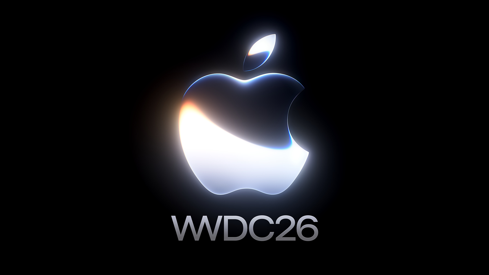
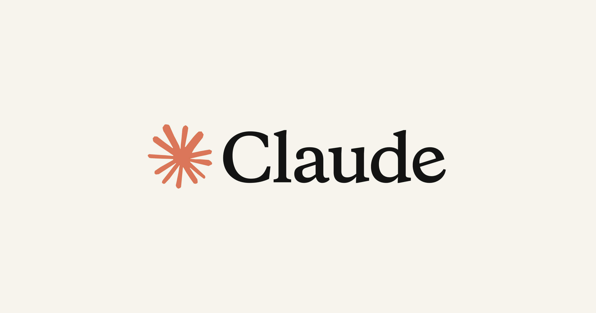
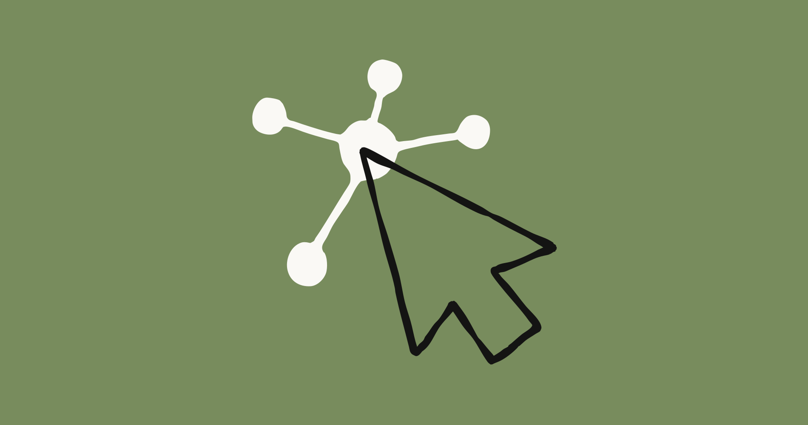

AI 情报日报｜2026-06-09
Monday, June 9, 2026
今日头版
Apple 在 WWDC26 把 AI 放进系统、开发框架和 Xcode 工作流里。
Claude Connector 开始提供运行监控，OpenRouter 把人类监督和模型路由推向 Agent 产品，Anthropic 则把生物学智能体放到科研数据库和专家复核场景里。
今天的主线很现实：AI 产品要进入系统、合规、科研、视频、求职和日常安全判断，光有模型能力已经不够，工具链、运行数据和验证机制也要跟上。
前线·创业融资·大厂竞争·力量转移
今日信号
Apple WWDC26：系统模型、Siri AI 和 Xcode Agent 同时更新

这场开发者大会把 AI 更新放到系统和开发工具两端。
Apple Intelligence 基于新一代 Apple foundation models 重建。App Intents 可以把应用内容和能力接到 Siri AI，Foundation Models 框架增加图像输入、云端模型和 Dynamic Profiles。
Xcode 27 也进入 Agent 线：Agent 可以跑测试、用 Playground 试方案、在 Simulator 里运行应用、修问题、做本地化。
这会同时影响普通用户的手机体验，以及开发者以后怎么做 iOS、macOS 和 Apple 生态里的 AI 应用。
来源：Apple Developer · developer.apple.com · 2026-06-08
前线·AI Agent·开源模型·瓶颈倒逼
EU AI Act 合规：AI 智能体开始接入人工监督
这套方案面向 EU AI Act、Colorado AI Act 和 NIST 要求。
它让 Agent SDK 支持人机协作审核，重点解决一个很具体的问题：当智能体替用户做决策时，哪里必须有人介入，哪里需要留下审计证据。
AI Agent 进入企业流程后，系统要能解释、能暂停、能交给人复核。合规会直接变成产品和工程里的功能设计。
来源：OpenRouter · openrouter.ai · 2026-06-08
前线·本地部署·推理能力·这也行？
Claude Connector 有了开发者性能监控仪表盘

这个开发者仪表盘开始提供公开测试版。开发者可以查看活跃用户、工具调用、延迟、错误和目录排名等数据。
Connector 进入真实使用场景后，最怕黑箱：用户有没有用、调用是否稳定、错误在哪里、延迟是否可接受，都需要持续监控。这类仪表盘会让 AI 连接器从"接上了"走向"能运营"。
来源：Claude Blog · claude.com · 2026-06-09
前线·AI Agent·产品转折
Anthropic 测试生物学智能体，难点藏在数据库和证据链里

Anthropic 发布生物学智能体研究，讨论 AI 在病毒学数据库、科研检索和实验辅助中的表现。
相比写代码，生物学任务更难，因为数据库像一座旧城市，结构复杂，路标不统一，错误成本也更高。
AI 进入科学，需要真正处理资料、证据、不确定性和专家复核。科研智能体的关键能力会落在查证、解释和边界控制上。
来源：Anthropic Research · anthropic.com · 2026-06-09
前线·AI Agent·产品转折·瓶颈倒逼
工具
Pakistan Notice Helper：点击、转账和验证码前先做风险判断
这是一个面向巴基斯坦用户的轻量 AI 工具。它会帮助用户在点击链接、拨打电话、分享 OTP 或付款前判断风险。
它处理的是普通人每天会遇到的小危险：短信、电话、支付和链接里的风险判断。一个小工具如果能把判断前移，就能减少很多低门槛诈骗。
来源：Hugging Face · huggingface.co · 2026-06-08
前线·AI Agent·产品转折
OpenRouter Advisor：小模型卡住时可以向强模型求助
这个工具让较小模型在卡住时咨询更强的顾问模型。系统会根据任务难度切换不同能力层级。
它和企业成本直接相关：简单任务用便宜模型，困难环节才请强模型出场。如果产品能自动完成这种分配，用户体验和账单都会更稳定。
来源：OpenRouter（X） · x.com/OpenRouter · 2026-06-08
前线·AI Agent·产品转折
Runway Aleph 2.0：同一段视频适配不同信息流
这个编辑模型面向视频重构。用户上传已有视频，再选择目标画幅，模型会补全、扩展或重新适配画面。
它瞄准的是创作者和营销团队最常见的重复工作：一个视频要反复裁切成横版、竖版和不同平台规格。现在模型开始承担格式转换和视觉补全，内容团队可以把更多精力放在叙事和选题上。
来源：Runway（X） · x.com/runwayml · 2026-06-08
Perplexity 与哈佛研究 Agent 如何改变知识工作
这项与哈佛相关的研究，重点看聊天界面转向自主智能体后，任务效率和成本结构可能发生的变化。研究对象已经从问答转向执行任务。
团队评估 AI 工具时，要看它能否独立推进任务、减少人工步骤、降低成本，并在失败时暴露问题。AI 对工作的影响，正在从单点提效变成流程重组。
来源：Perplexity Research · research.perplexity.ai · 2026-06-09
声音
趋势
OpenAI 秘密提交 S-1 草案，资本市场进程浮出水面
OpenAI 已经向美国 SEC 秘密提交 S-1 注册草案，并表示尚未确定后续公开节奏。秘密提交说明公司进入更正式的资本市场准备阶段。
这条要和模型竞争一起看。大模型公司正在同时比能力、融资结构、治理方式、监管沟通和长期运营能力。
来源：OpenAI Blog · openai.com · 2026-06-08
趋势·大厂竞争·本地部署·经济学翻转
五个模型经济体中消失的崩溃：智能体行为仍要反复验证
Hugging Face 社区实验把五个不同实验室的模型放进同一个经济市场，试图复现此前出现过的价格崩溃。
结果没有稳定复现：模型没有集体抛售，反而出现囤积和价格上升。
这条的关键是行为稳定性——多智能体系统需要经过反复验证，才可能得到可预测结果。
来源：Hugging Face · huggingface.co · 2026-06-08
趋势·AI Agent·本地部署·经济学翻转
今日小结
今天这份电报收进 13 条信号。
第一条线：AI 进入系统层。Apple 把模型、Siri、App Intents 和 Xcode Agent 串到开发生态里，说明系统入口开始变得更重要。
第二条线：Agent 工程开始补治理和运营能力。人工监督、模型路由、性能监控、失败复核，正在变成产品必备能力。
第三条线：科研和多智能体实验提醒我们保持清醒。系统跑起来之后，还要继续验证可靠性、可控性和复现性。
明天继续看两件事：模型能力怎样进入普通团队的工作流；Agent 系统怎样把成本、安全和可验证性一起补齐。
小结·AI Agent·经济学翻转